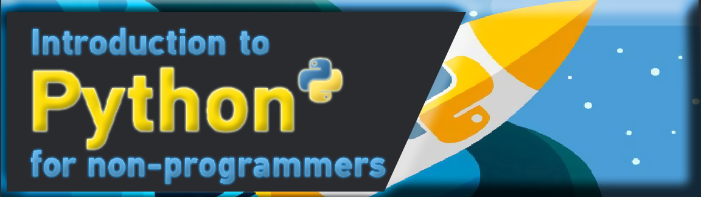

LECTURE - 05 FUNCTIONSO
การสร้างและการใช้งานฟังก์ชันในเบื้องต้น และการเรียกใช้งานฟังก์ชันในรูปแบบต่างๆ ที่สำคัญ เช่น Default Argument และ Keyword Augment และมากไปกว่านั้น เราจะแนะนำให้คุณรู้จักกับ built-in ฟังก์ชันในภาษา Python
การสร้างฟังก์ชันในภาษา Python
ฟังก์ชัน (Function) คือส่วนของโค้ดหรือโปรแกรมที่ทำงานเพื่อวัตถุประสงค์บางอย่าง ในภาษา Python คุณสามารถสร้างฟังก์ชันของคุณเองเพื่อให้ทำงานที่ต้องการ ในการเขียนโปรแกรมเรามักจะแยกโค้ดที่มีการทำงานเหมือนๆ กันเป็นฟังก์ชันเอาไว้ และเรียกใช้ฟังก์ชันนั้นซ้ำๆ ซึ่งเป็นแนวคิดของการนำโค้ดกลับมาใช้ใหม่ (Code reuse) นี่เป็นรูปแบบของการประกาศฟังก์ชันในภาษา Python
def function_name(args...):
# statements
def function_name(args...):
# statements
return value
ในรูปแบบของการประกาศฟังก์ชันในภาษา Python นั้นจะใช้คำสั่ง def และหลังจากนั้น function_name เป็นชื่อของฟังก์ชัน และในวงเล็บ () เป็นการกำหนดพารามิเตอร์ของฟังก์ชัน พารามิเตอร์ของฟังก์ชันนั้นสามารถมีจำนวนเท่าไหร่ก็ได้หรือไม่มีก็ได้ และเช่นเดียวกับภาษาอื่นๆ ฟังก์ชันอาจจะมีหรือไม่มีการส่งค่ากลับ สำหรับฟังก์ชันที่ไม่มีการ return ค่ากลับนั้น เรามักจะเรียกว่า โพรซีเยอร์ (Procedure) ต่อไปมาดูตัวอย่างการประกาศและใช้งานฟังก์ชันในภาษา Python
def hello(name):
print('Hello %s' % name)
def count_vowel(str):
vowel = 0
for c in str:
if c in ('A', 'E', 'I', 'O', 'U', 'a', 'e', 'i', 'o', 'u'):
vowel = vowel + 1
return vowel
def area(width, height):
c = width * height
return cในตัวอย่าง เราได้สร้างฟังก์ชันจำนวน 3 ฟังก์ชัน ฟังก์ชันแรกมีชื่อว่า hello() เป็นฟังก์ชันสำหรับแสดงข้อความทักทายจากที่ชื่อส่งเข้ามา ฟังก์ชันนี้มีหนึ่งพารามิเตอร์คือ name สำหรับรับชื่อที่ส่งเข้ามาในฟังก์ชัน
def count_vowel(str):
vowel = 0
for c in str:
if c in ('A', 'E', 'I', 'O', 'U', 'a', 'e', 'i', 'o', 'u'):
vowel = vowel + 1
return vowelต่อมาฟังก์ชัน count_vowel() เป็นฟังก์ชันสำหรับนับจำนวนสระใน String ฟังก์ชันนี้มีหนึ่ง String พารามิเตอร์ ในการทำงานของฟังก์ชันนั้นเราใช้คำสั่ง For loop ในการวนอ่านค่าทีละตัวอักษรเพื่อตรวจสอบว่าเป็นสระหรือไม่ด้วยคำสั่ง in และตัวแปร vowel นั้นใช้สำหรับนับจำนวนสระที่พบใน String ในตอนท้ายเราได้ส่งค่าของจำนวนสระที่นับได้กลับไปด้วยคำสั่ง return
def area(width, height):
c = width * height
return cและฟังกชันสุดท้ายคือฟังก์ชัน area() เป็นฟังก์ชันสำหรับหาพื้นที่ของรูปสี่เหลี่ยมด้านขนาน และฟังก์ชันมีพารามิเตอร์สองตัวสำหรับความกว้างและความยาวของสี่เหลี่ยม และฟังก์ชันทำการ return ผลลัพธ์ที่เป็นพื้นที่กลับไปด้วยคำสั่ง return
การเรียกใช้งานฟังก์ชันในภาษา Python
หลังจากเราได้สร้างฟังก์ชันในตัวอย่างก่อนหน้าแล้ว ต่อไปเราจะมาเรียกใช้งานฟังก์ชันเหล่านั้น ในการเรียกใช้ฟังก์ชันนั้นเราจะใช้ชื่อของฟังก์ชันและส่งอาร์กิวเมนต์ให้สอดคล้องกับพารามิเตอร์ที่กำหนดไว้ในฟังก์ชัน ดังนั้นอาร์กิวเมนต์คือค่าที่ส่งเข้าไปในฟังก์ชันตอนใช้งาน ส่วนพารามิเตอร์นั้นคือตัวแปรทีกำหนดไว้ในฟังก์ชันเพื่อรับค่าจากอาร์กิวเมนต์ มาดูตัวอย่างการเรียกใช้งานฟังก์ชันในภาษา Python
def hello(name):
print('Hello %s' % name)
def count_vowel(str):
vowel = 0
for c in str:
if c in ('A', 'E', 'I', 'O', 'U', 'a', 'e', 'i', 'o', 'u'):
vowel = vowel + 1
return vowel
def area(width, height):
c = width * height
return c
# calling functions
hello('Danny')
hello('Mateo')
print('Vowel in string = %d' % count_vowel('marcuscode.com'))
print('Vowel in string = %d' % count_vowel('Python'))
print('Area = %d' % area(8, 4))ในตัวอย่าง เป็นการเรียกใช้งานฟังก์ชันที่เราสร้างขึ้น เราได้เรียกใช้ฟังก์ชัน hello() และส่งอาร์กิวเมนต์ที่เป็น String เข้าไปยังฟังก์ชัน เราเรียกใช้ฟังก์ชันนี้สองครั้ง ซึ่งนี่เองเป็นการ reuse โค้ดในการเขียนโปรแกรม
หลังจากนั้นเราเรียกใช้ฟังก์ชัน count_vowel() และฟังก์ชัน area() และส่งพารามิเตอร์ที่ถูกต้องไปยังฟังก์ชัน และเพราะว่าฟังก์ชันเหล่านี้มีการ return ค่ากลับ เราสามารถนำค่าเหล่านี้ไปใช้งานได้ต่อไป เราได้นำไปใช้กับฟังก์ชัน print() เพื่อจัดรูปแบบการแสดงผล
Hello Danny
Hello Mateo
Vowel in string = 5
Vowel in string = 1
Area = 32นี่เป็นผลลัพธ์การทำงานของโปรแกรม จากการเรียกใช้งานฟังก์ชันในภาษา Python
Default Argument Values
ในภาษา Python เราสามารถสร้างฟังก์ชันโดยการกำหนด Default Argument ให้กับฟังก์ชันพารามิเตอร์ได้ Default Argument เป็นการการกำหนดค่าเริ่มต้นให้กับอาร์กิวเมนต์ที่ส่งเข้ามายังฟังก์ชัน นั่นทำให้เราสามารถเรียกใช้งานฟังก์ชันโดยการส่งอาร์กิวเมนต์น้อยกว่าจำนวนที่กำหนดไว้ในฟังก์ชันได้ ซึ่งอำนวยความสะดวกในการใช้งานมากขึ้น มาดูตัวอย่างการสร้างและใช้งานฟังก์ชันกับ Default Argument
def show_info(name, salary = 84360, lang = "Python"):
print('Name: %s' % name)
print('Salary: %d' % salary)
print('Language: %s' % lang)
print()ในตัวอย่าง เราได้สร้างฟังก์ชัน show_info() สำหรับแสดงข้อมูลของโปรแกรมเมอร์ ข้อมูลที่จำเป็นต้องการจะแสดงนั้นมีชื่อ เงินเดือน และภาษาที่เขียน ในฟังก์ชันของเรานั้นมี 3 พารามิเตอร์ พารามิเตอร์แรก name นั้นเป็นพารามิเตอร์แบบปกติ และสองพารามิเตอร์นั้นเป็น Default Argument ซึ่งเรากำหนดค่าเริ่มต้นให้กับพารามิเตอร์โดยใช้เครื่องหมาย = ในการกำหนดพารามิเตอร์นั้น Default Argument ต้องอยู่หลังพารามิเตอร์แบบปกติเสมอ
# calling function
show_info('Mateo')
show_info('Mateo', 105000)
show_info('Danny', 120000, 'Java')ในการเรียกใช้งานฟังก์ชันนั้น เราต้องทำการส่งค่าอาร์กิวเมนต์สำหรับพารามิเตอร์แบบปกติเสมอ ส่วนพารามิเตอร์แบบ Default Argument นั้นเป็นทางเลือก ในตัวอย่าง คำสั่งเราเรียกใช้ฟังก์ชันโดยอาร์กิวเมนต์เพียงหนึ่งตัวเข้าไป ทำให้สองอาร์กิวเมนต์ที่เหลือที่เป็น Default Argument ใช้ค่าเริ่มต้นของมันแทน คือ 84360 สำหรับเงินเดือน และ "Python" สำหรับภาษาเขียนโปรแกรม
ต่อมาเราเรียกใช้ฟังก์ชันโดยการส่งสองอาร์กิวเมนต์เข้าไป ทำให้มีเพียงพารามิเตอร์สุดท้ายเท่านั้นที่ใช้ค่าเริ่มต้น และในคำสั่งสุดท้ายเป็นการส่งค่าครบจำนวนให้กับทุกอาร์กิวเมนต์
Name: Mateo
Salary: 84360
Language: Python
Name: Mateo
Salary: 105000
Language: Python
Name: Danny
Salary: 120000
Language: Javaนี่เป็นผลลัพธ์การทำงานของโปรแกรม ในการเรียกใช้งานฟังก์ชันกับ Default Argument
Keyword Arguments
ในภาษา Python เราสามารถเรียกใช้งานฟังก์ชันในรูปแบบของ Keyword Argument โดยการใช้ชื่อของพารามิเตอร์สำหรับส่งอาร์กิวเมนต์ ในการใช้งานนั้น พารามิเตอร์ต้องมีการกำหนดในรูปแบบของ Default Argument ก่อน มาดูตัวอย่างการใช้งาน Keyword Arguments ในภาษา Python
def create_button(id, color = '#ffffff', text = 'Button', size = 16):
print('Button ID: %d' % id)
print('Attributes:')
print('Color: %s' % color)
print('Text: %s' % text)
print('Size: %d px' % size)
print()
create_button(10)
create_button(11, color = '#4286f4', text = 'Sign up')
create_button(id = 12, color = '#323f54', size = 24)
create_button(color = '#1cb22b', text = 'Log in', size = 32, id = 13)Button ID: 10
Attributes:
Color: #ffffff
Text: Button
Size: 16 px
Button ID: 11
Attributes:
Color: #4286f4
Text: Sign up
Size: 16 px
Button ID: 12
Attributes:
Color: #323f54
Text: Button
Size: 24 px
Button ID: 13
Attributes:
Color: #1cb22b
Text: Log in
Size: 32 pxนี่เป็นผลลัพธ์การทำงานของโปรแกรม เราได้เรียกใช้งานฟังก์ชันเพื่อสร้างปุ่ม 4 ปุ่มในรูปแบบต่างๆ ของการใช้ Keyword Argument
ตัวอย่างของฟังก์ชันที่มีการใช้งานในรูปแบบของ Keyword Argument ก็คือ ฟังก์ชัน print() เราสามารถเปลี่ยนตัวคั่นระหว่างอาร์กิวเมนต์ และการแสดงผลลัพธ์ในตอนท้ายของฟังก์ชันได้ โดยการใช้ Keyword sep และ end ตามลำดับ
print(1, 2, 3)
print(1, 2, 3, sep = '-', end = '/')Lambda Expressions
Lambda Expressions คือ anonymous function ที่เป็นฟังก์ชันที่มีการทำงานขนาดเล็กอยู่ภายในที่สามารถมีได้เพียง Expression เดียวเท่านั้น เราสามารถสร้างโดยใช้คำสั่ง lambda เราสามารถใช้ Lambda Expressions สร้างออบเจ็คของฟังก์ชันได้ และค่า return จะเป็นค่าที่ได้จากผลลัพธ์ของ Expression ของฟังก์ชัน มาดูตัวอย่างการใช้งาน
f = lambda x: x + 1
print(f(2))
print(f(8))
g = lambda a, b: (a + b) / 2
print(g(3, 5))
print(g(10, 33))
def make_incrementor(n):
return lambda x: x + n
f = make_incrementor(13)
print(f(0))
print(f(1))
print(f(5))ในตัวอย่าง เราได้สร้าง Lambda Expressions เป็นจำนวนสามฟังก์ชัน ฟังก์ชันแรกเป็นฟังก์ชันสำหรับเพิ่มตัวเลขขึ้น 1 และฟังก์ชันที่สองเป็นฟังก์ชันสำหรับหาค่าเฉลี่ยของตัวเลขสองจำนวน คุณจะสังเกตได้ว่าฟังก์ชันแรกนั้นมี 1 อาร์กิวเมนต์และฟังก์ชันที่สองนั้นมี 2 อาร์กิวเมนต์ และฟังก์ชันสุดท้ายนั้นเป็นการ return ฟังก์ชันกลับภายในฟังก์ชันอีกที และเป็นฟังก์ชันสำหรับเพิ่มตัวเลขขึ้นจำนวน n จากอาร์กิวเมนต์ที่ใส่เข้าไป
3
9
4.0
21.5
13
14
18นี่เป็นผลลัพธ์การทำงานของโปรแกรม
นอกจากนี้ Lambda Expressions ยังมีประโยชน์เพื่อใช้งานกับ built-in function เช่น ฟังก์ชัน filter() และฟังก์ชัน map() ในภาษา Python มันใช้เป็นอาร์กิวเมนต์ส่งเข้าไปในฟังก์ชัน เพื่อสร้าง Expression ให้กับฟังก์ชัน มาดูตัวอย่างการใช้งาน
numbers = [2, 15, 5, 7, 10, 3, 28, 30]
print(list(filter(lambda x: x % 5 == 0, numbers)))
print(list(map(lambda x: x * 2, numbers)))ในตัวอย่าง เรามีลิสต์ของตัวเลข Integer และเราได้ใช้ฟังก์ชัน filter() และฟังก์ชัน map() ซึ่งเป็นฟังก์ชันที่มีอาร์กิวเมนต์ตัวแรกเป็นฟังก์ชัน และตัวที่สองเป็นลิสต์ ในการทำงานของฟังก์ชัน filter() เราได้ใช้ฟังก์ชันกรองเอาตัวเลขที่ตรงกันกับ Lambda Expressions ซึ่งก็คือตัวเลขในลิสต์ที่หารด้วย 5 ลงตัว และในการใช้ฟังก์ชัน map() เป็นการเชื่อมโยงค่าในลิสต์ให้ตรงกับ Lambda Expressions คือการเพิ่มตัวเลขให้เป็นสองเท่า ซึ่งทั้งสองฟังก์ชันนี้ส่งค่ากลับเป็นออบเจ็ค และเราใช้ฟังก์ชัน list() เพื่อแปลงออบเจ็คให้เป็นสิสต์
[15, 5, 10, 30]
[4, 30, 10, 14, 20, 6, 56, 60]